The ecosystem approach to human health is based on the belief that ecosystems and human livelihood are interconnected; i.e., human health is affected by ecosystem change. By maintaining and improving our environment, we improve human health and well-being in a sustainable way, which in turn contributesto ecological sustainability.
In order to promote the application of ecohealth approaches, there is an urgent need for capacity-building, knowledge generation, leadership development and global networking in the field of ecohealth.
Asia is the most rapidly developing region in the world and home to the greatest concentration of cultural and biological diversity. At the same time, regional environmental change is occurring at a historically rapid rate, creating vulnerable populations and ecosystems, and contributing to the global hotspot of emerging infectious diseases. The idea of establishing an EcoHealth Network was developed from the WHO/TDR-IDRC-funded multi-country initiative: "Eco-Bio-Social (EBS) Research on Dengue in Asia" that involved 6 Asian countries, i.e., India, Indonesia, Myanmar, Philippines, Sri Lanka and Thailand. One of the outcomes from that initiative was the desire to maintain interaction and collaboration among the investigators, which could be extended to other infectious diseases. During the development of the IDRC-EcoEID Research Project, the Asian EBS Network was extended to include members from Cambodia, Lao PDR and Vietnam. The membership was then later extended to Bangladesh, Bhutan, China, Malaysia, Maldives, Nepal, Pakistan and Singapore; the total number to date is 17 countries.
The "EcoHealth Network" was officially launched at the 1st EcoHealth Network Meeting in Koh Chang, Thailand, 29-31 January, 2011, and was attended by representatives of 15 countries.
Vision:To be the leading network on the community of practice in ecohealth in Asia and worldwide
Motto:Healthy Ecosystem = Healthy People
MIssion:The EcoHealth Network is a non-profit, non-political scientific and educational entity whose mission is to develop and coordinate a strong network of committed individuals and institutions that will facilitate the sustainable establishment of integrative programs aimed at improving the health of people and their environments.
Scope:The EcoHealth Network is composed of individuals, institutes and organisations from various disciplines who are involved in integrative ecohealth activities through education, research, training, advocacy, policy, etc. It is a community with the particularly common mission of promoting public health.
The EcoHealth Network will serve as a forum and platform for information and resource sharing, research capacity strengthening and research collaboration. Our areas of research cover topics that are related to how changes in ecosystems (composed of ecological, biological and social situations) could impact human health, in particular with regards to emerging and re-emerging infectious diseases. This research strives to provide innovative, practical and realistic solutions that will reduce or reverse the negative impacts of ecosystem change. Therefore, the ways in which the network plans to liaise with professional and scientific associations could play an important role in maximizing the benefits of activities of mutual interest and building positive synergy around innovative ideas and good practices via customized social networks.
Objectives:1. Capacity Building
1.1 Certificate Training:
The network will offer a certificate-training program in the field of EcoHealth. It will also provide valuable "hands-on" learning experiences within different settings among member countries.
1.2 EcoHealth Curriculum:
The network will develop an integrative multi-disciplinary curriculum on EcoHealth that addresses the needs of member countries.
2. Multi-country Research & Collaboration:
The network will provide broader opportunities to expand the existing collaboration among member countries with regards to collaborative research.
3. Networking & Information Sharing:
The network will be a platform for continuous interaction and information sharing in the field of EcoHealth among member countries.
4. Advocacy and Policy Linkages:
The network will provide strong local, regional and international venues to advocate and enforce policies that advance and protect sustainable ecosystems.
Organization:The network will be operated through a Network Coordinating Committee (NCC) composed of country representatives. The committee will consist of the Chair, Secretary-General, Treasurer, Coordinator, Editor and the member-at-large. The Committee Chair will be elected and rotated among the member countries. The general responsibilities of the NCC are to provide strategic directions and arrange the order of business of the network (e.g., forum, capacity building of network members/institutions, and collaborations among network members). The term of committee membership is three years. A Scientific Advisory Board (SAB) of 5-7 members will be appointed by the committee to offer expert advice on issues related to the activities of the network. The chair and the committee will be assisted by a Network Manager. It is expected that the members of the committee will promote the network and their involvement with other scientific institutions.
Member Countries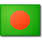 Bangladesh
Bhutan
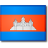 Cambodia
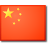 China
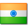 India
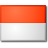 Indonesia
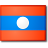 Laos
Maldives
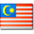 Malaysia
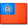 Myanmar
Nepal
Pakistan
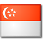 Singapore
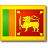 Sri Lanka
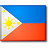 Philippines
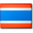 Thailand
Vietnam